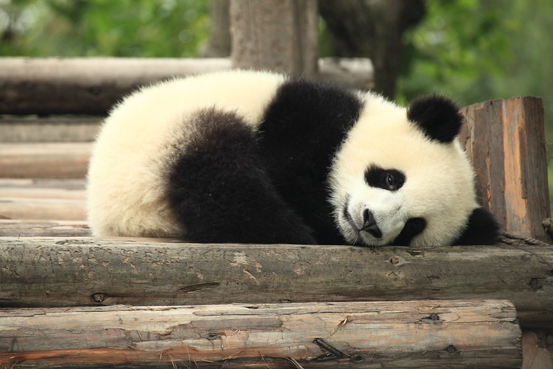

About 17 years ago a bunch of frustrated mountain bikers mostly from the San Diego county area decided to make a home of their own. It was a community of nonsense and fun and fun nonsense. There were broken legs from hucks gone wrong and mountain biking association flame wars. There were book club meetups. There were hidden beer stashes. There were wild yeti sitings. More recently we've been blessed with evdog's extensive treader reports, ODD's dogs and beverages, critters and flowers, good music, and photos of Fred that also happen to have E-bikes.
Unfortunately though, all things end eventually, and although I've managed to keep DT going on chewing gum and duct tape for a few extra years, DT has sustained mortal wounds.
So it's time to say so long to our old home as it crosses the rainbow bridge. Thanks so much for making DT so much fun over the years.
PS: what was the stove for?
